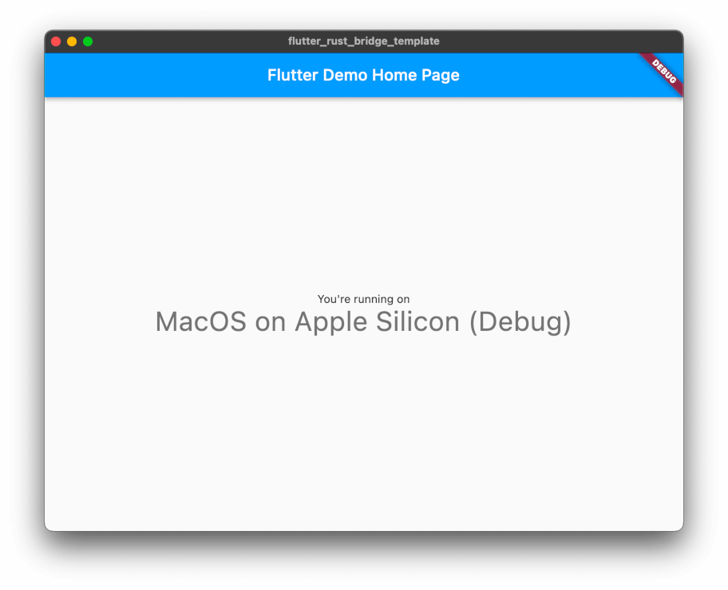

flutter_rust_bridge: High-level memory-safe binding generator for Flutter/Dart <-> Rust


Want to combine the best between Flutter, a cross-platform hot-reload rapid-development UI toolkit, and Rust, a language empowering everyone to build reliable and efficient software? Here it comes!
🚀 Advantages
- Memory-safe: Never need to think about malloc/free.
- Feature-rich:
enums with values, platform-optimizedVec, possibly recursivestruct, zero-copy big arrays,Stream(iterator) abstraction, error (Result) handling, cancellable tasks, concurrency control, and more. See full features here. - Async programming: Rust code will never block the Flutter. Call Rust naturally from Flutter's main isolate (thread).
- Lightweight: This is not a huge framework that includes everything, so you are free to use your favorite Flutter and Rust libraries. For example, state-management with Flutter library (e.g. MobX) can be elegant and simple (contrary to implementing in Rust); implementing a photo manipulation algorithm in Rust will be fast and safe (countrary to implementing in Flutter).
- Cross-platform: Android, iOS, Windows, Linux, MacOS, and Web.
- Easy to code-review & convince yourself: This package simply simulates how humans write boilerplate code. If you want to convince yourself (or your team) that it is safe, there is not much code to look at. No magic at all! (More about safety concerns.)
- Fast: It is only a thin (though feature-rich) wrapper, without overhead such as protobuf serialization, thus performant. (More benchmarks later) (Throw away components like thread-pool to make it even faster)
- Pure-Dart compatible: Despite the name, this package is 100% compatible with pure Dart.
💡 User Guide
Check out the user guide for show-me-the-code, tutorials, features and much more.
📎 P.S. Convenient Flutter tests
If you want to write and debug tests in Flutter conveniently, with action history, time travelling, screenshots, rapid re-execution, video recordings, interactive mode and more, here is my another open-source library: https://github.com/fzyzcjy/flutter_convenient_test.
✨ Contributors

Thanks goes to these wonderful people (emoji key following all-contributors specification):


More specifically, thanks for all these contributions:
- Desdaemon: Support not only simple enums but also enums with fields which gets translated to native enum or freezed class in Dart. Support the Option type as nullable types in Dart. Support Vec of Strings type. Support comments in code. Add marker attributes for future usage. Add Linux and Windows support for with-flutter example, and make CI works for that. Avoid parameter collision. Overhaul the documentation and add several chapters to demonstrate configuring a Flutter+Rust project in all five platforms. Refactor command module. Precompiled binary CI workflow. Fix bugs. Add support for the Web platform, parallel to the existing mobile/desktop platforms, via WASM and JavaScript as intermediate values. GitHub retry actions.
- SecondFlight: Allow structs and enums to be imported from other files within the crate by creating source graph. Auto-create relavent dir. Fix
store_dart_post_cobjecterror with ffigen 6.0. - Unoqwy: Add struct mirrors, such that types in the external crates can be imported and used without redefining and copying.
- antonok-edm: Avoid converting syn types to strings before parsing to improve code and be more robust.
- lattice0: Support methods, such that Rust struct impls can be converted to Dart class methods. StreamSink at any argument.
- sagudev: Make code generator a
lib. Add error types. Depend oncbindgen. Fix LLVM paths. Update deps. Fix CI errors. - surban: Support unit return type. Skip unresolvable modules. Ignore prefer_const_constructors. Non-final Dart fields.
- trobanga: Add support for
[T;N]structs. Addusizesupport. Add a cmd argument. Separate dart tests. - Roms1383: Fix build_runner calling bug. Remove global
ffigendependency. Improve version check. Fix enum name-variant conflicts. Update CI. Update header comments. Code cleanup. - dbsxdbsx: Allow generating multiple Rust and Dart files.
- SoLongAndThanksForAllThePizza: Refactor and enhance SyncReturn to support more types.
- alanlzhang: Add generation for Dart metadata. Enhance module parser.
- AlienKevin: Add flutter example for macOS. Add doc for Android NDK bug.
- efc-mw: Improve Windows encoding handling.
- valeth: Rename callFfi's port.
- Cupnfish: Allow multi mirror.
- sccheruku: Prevent double-generating utility.
- w-ensink: Improve doc. Fix CI. Refactor. Add tests.
- Michael-F-Bryan: Detect broken bindings.
- bus710: Add a case in troubleshooting.
- Syndim: Add a bracket to box.
- banool: Fix symbol-stripping doc.
- TENX-S: Improve doc. Reproduce a bug.
- raphaelrobert: Remove oudated doc.
- thomas725: Improve doc.
- juzi5201314: Improve doc.
- Stonks3141: Fix doc credit.
- feber: Fix doc link.
- rustui: Fix a typo.
- eltociear: Fix a typo.
Quickstart
Write down Rust functions and types normally.
// A normal Rust function ...
pub fn draw_tree(root: TreeNode, mode: DrawMode) -> Result<Vec<u8>> { /* ... */ }
// ... with rich types
pub struct TreeNode { pub value: String, pub children: Vec<MyTreeNode> }
pub enum DrawMode { Colorful {palette: String}, Grayscale }
Install the code generator flutter_rust_bridge_codegen:
cargo install flutter_rust_bridge_codegen
# or with cargo-binstall
cargo binstall flutter_rust_bridge_codegen
# or with scoop (Windows)
scoop bucket add frb https://github.com/Desdaemon/scoop-repo
scoop install flutter_rust_bridge_codegen
# or with Homebrew
brew install desdaemon/repo/flutter_rust_bridge_codegen
(Remark: Thanks @Desdaemon for scripts to publish to brew/scoop)
Then run the code generator.
Remark: It needs some installation steps. You may refer to the tutorial, create new projects from a template or integrating with existing projects for details.
flutter_rust_bridge_codegen --rust-input path/to/api.rs \
--dart-output path/to/bridge_generated.dart
With bindings automatically generated, use it seamlessly in Flutter/Dart:
api.drawTree(TreeNode(value: "root", ...), Colorful(palette: "viridis"));
Tutorial: A Flutter+Rust app
In this tutorial, let us draw a Mandelbrot set (a well-known infinite-resolution "image" generated by a simple math formula). The image is plotted in Flutter UI, generated by Rust algorithm, and communicated via this library.
(Click to see: What is a Mandelbrot set)
The Mandelbrot set is the set of complex numbers c for which the function f_c(z)=z^{2}+c does not diverge to infinity when iterated from z=0. Images of the Mandelbrot set exhibit an elaborate and infinitely complicated boundary that reveals progressively ever-finer recursive detail at increasing magnifications.

Image credit: Simpsons contributor
Get code
Please install Flutter (optionally with desktop support if you want to run app on desktop instead of cellphones), install Rust, and have some familiarity with them. Then get the example codebase:
git clone https://github.com/fzyzcjy/flutter_rust_bridge && cd flutter_rust_bridge/frb_example/with_flutter
Optional: Run generator
This step is optional, since I have generated the source code already (in quickstart). Even if you do it, you should not see anything changed.
As soon as you make any modification to api.rs, you need to run codegen again. More informations about requirements for code generation can be seen in the Installing dependencies section.
Run app
Prelogue: Command details
The CI workflow is useful if you want details of each command. The flutter_android_test, flutter_ios_test, flutter_windows_test, flutter_macos_test and flutter_linux_test demonstrates the exact commands needed to run this tutorial codebase from a brand new machine.
Android app
Append line ANDROID_NDK=(path to NDK) to android/gradle.properties and run cargo ndk -o ../android/app/src/main/jniLibs build. Then run the Flutter app normally such as flutter run.
Remark: This tutorial will help you automatically execute cargo builds when building Flutter app.
iOS app
Modify Cargo.toml to change cdylib to staticlib, then run cargo lipo && cp target/universal/debug/libflutter_rust_bridge_example.a ../ios/Runner to build Rust and copy the static library. Then run the Flutter app normally such as flutter run.
Remark: This tutorial will help you automatically execute cargo builds when building Flutter app.
Windows app
Run it directly using flutter run assuming Flutter desktop support has been configured. More details can be seen in #66.
Linux app
Same as Windows. If you install Flutter through snap, please be wary of #53.
MacOS app
Same as Windows. (P.S. Under the hood, cargo-xcode is used to automate the process)
Web (as a webpage)
Install flutter_rust_bridge_serve to simplify the process of building and serving a WASM binary.
See Web setup for more details.
Features
In this chapter, we are going to demonstrate the features. Please use the menu bar at the left / left-top of the page to navigate.
Prelogue
What this library is and is not
This library is nothing but a code generator that helps your Flutter/Dart functions call Rust functions. It only generates some boilerplate code that you will manually write down otherwise. Moreover, we have provided detailed tutorials for you to play with examples, set up brand new apps, and integrate with existing apps.
Of course, you may still need to have some basic familiarity with Flutter/Dart, Rust, and its ffi.
Full examples
If you want to look at a lot of examples - I have to warn you, really too many - have a look at pure_dart's api.rs. It contains all tests for this library.
In addition, when you are quite familiar with the basic example, you can then take a look at pure_dart_multi. This example contains multiple blocks of APIs instead of one, which is quite useful for complex projects.
Language translations
In this section, we will show how various language features are translated between Rust and Dart.
Simple correspondence
Here is a brief glance showing what the code generator can generate (non-exhaustive). Some rows have hyper-links pointing to more detailed explanations.
| Rust | Dart |
|---|---|
Vec<u8>, Vec<i8>.. | Uint8List, Int8List, .. |
Vec<T> | List<T> |
[T; N] | List<T> |
struct { .. }, struct( .. ) | class |
enum { A, B } | enum |
enum { A(..) } | @freezed class |
use ... | act normally |
Option<T> | T? |
Box<T> | T |
| comments | same |
Result::Err, panic | throw Exception |
i8, u8, .., usize | int |
f32, f64 | double |
bool | bool |
String | String |
() | void |
Vec and array
Vec<u8>, Vec<i8>, ...
In Dart, when you want to express a long byte array such as a big image or some binary blob, people normally use Uint8List instead of List<int> since the former is much performant. flutter_rust_bridge takes this into consideration for you. When you have Vec<u8> (or Vec<i8>, or Vec<i32>, etc), it will be translated it into Uint8List or its friends.
Vec<T>
When you have normal Vec<T> for T types other than u8, i8 etc, it will be converted to normal List<T>.
[T; N]
Since Dart does not have special treatment for static-sized arrays, it is converted to List<T> as well.
Example
pub fn draw_tree(tree: Vec<TreeNode>) -> Vec<u8> { ... }
Becomes:
Future<Uint8List> drawTree({required List<TreeNode> tree});
Remark: If you are curious about Future, have a look at this.
structs
Normal Rust structs are supported. You can even use recursive fields, such as pub struct TreeNode { pub value: String, pub children: Vec<MyTreeNode>, pub parent: Box<MyTreeNode> }.
If a struct field has type being a struct or an enum, please add a Box on it, or it will lead to compile-time error. For example, struct A {b: B} should be struct A {b: Box<B>} instead.
Tuple structs
Tuple structs struct Foo(A, B) are translated as class Foo { A field0; B field1; }, since Dart does not have anonymous fields.
Non-final fields
By adding #[frb(non_final)] to a field of struct, the corresponding field in Dart will be non-final. By default, we make all generated fields final because of Rust's philosophy - immutable by default.
Dart metadata annotations
You can add dart metadata annotations using dart_metadata parameter in frb macro.
- For annotations that are prelude by dart (e.g.
@deprecated), just put annotation as a Rust literal. - If importing is needed, then add importing part behind the annotation string. Currently two forms of importing supported:
import 'somepackage'import 'somepackage' as somename, wheresomenamewill be the prefix of the annotation
- Multiple annotations are seperated by comma
,.
See below for an example.
freezed Dart classes
If you want the generated Dart class to be freezed (which is like data-classes in other languages like Kotlin), simply put #[frb(dart_metadata=("freezed"))] and it will generate everything needed for you.
Example
Example 1: Recursive fields
pub struct MyTreeNode {
pub value: Vec<u8>,
pub children: Vec<MyTreeNode>,
}
Becomes:
class MyTreeNode {
final Uint8List value;
final List<MyTreeNode> children;
MyTreeNode({required this.value, required this.children});
}
Remark: If you are curious about Future, have a look at this.
Example 2: Metadata
#[frb(dart_metadata=("freezed", "immutable" import "package:meta/meta.dart" as meta))]
pub struct UserId {
pub value: u32,
}
Becomes:
import 'package:meta/meta.dart' as meta;
@freezed
@meta.immutable
class UserId with _$UserId {
const factory UserId({
required int value,
}) = _UserId;
}
enums
Rust's enum are known to be very expressive and powerful - it allows each enum variant to have different associated data. Dart does not have such things in built-in enums, but no worries - we will automatically translate it into the equivalent using the freezed Dart library. The syntax for freezed may look a bit strange at the first glance, but please look at its doc and see its powerfulness.
Example
pub enum KitchenSink {
Empty,
Primitives {
/// Dart field comment
int32: i32,
float64: f64,
boolean: bool,
},
Nested(Box<KitchenSink>),
Optional(
/// Comment on anonymous field
Option<i32>,
Option<i32>,
),
Buffer(ZeroCopyBuffer<Vec<u8>>),
Enums(Weekdays),
}
Becomes:
@freezed
class KitchenSink with _$KitchenSink {
/// Comment on variant
const factory KitchenSink.empty() = Empty;
const factory KitchenSink.primitives({
/// Dart field comment
required int int32,
required double float64,
required bool boolean,
}) = Primitives;
const factory KitchenSink.nested(
KitchenSink field0,
) = Nested;
const factory KitchenSink.optional([
/// Comment on anonymous field
int? field0,
int? field1,
]) = Optional;
const factory KitchenSink.buffer(
Uint8List field0,
) = Buffer;
const factory KitchenSink.enums(
Weekdays field0,
) = Enums;
}
And they are powered with all functionalities of freezed.
Remark: If you are curious about Future, have a look at this.
External types
Types in other files within the same crate
Imported symbols can be used normally. For example, with use crate::data::{MyEnum, MyStruct};, you can use MyEnum or MyStruct in your code normally.
Example
use crate::data::{MyEnum, MyStruct};
pub fn use_imported_things(my_struct: MyStruct, my_enum: MyEnum) { ... }
Becomes:
// Well it just behaves normally as you expect
Future<void> useImportedThings({required MyStruct myStruct, required MyEnum myEnum});
Remark: If you are curious about Future, have a look at this.
Types in other crates
The feature is called "mirroring". In short, you need to define the type again mirroring the external type that you want to use. That definition is only used at code-generation time to tell flutter_rust_bridge type information. To see exact grammar, have a look at the example below.
No need to worry whether this breaks the DRY principle, or what happens when you accidentially write down a wrong field. This is because compile errors will happen if your mirrored type is not exactly same as the original type.
More information: #352
When multiple structs have the same fields, you can mirror them once using grammar like #[frb(mirror(FirstStruct, SecondStruct, ThirdStruct))]. (#619)
Example
// Mirroring example:
// The goal of mirroring is to use external objects without needing to convert them with an intermediate type
// In this case, the struct ApplicationSettings is defined in another crate (called external-lib)
// To use an external type with mirroring, it MUST be imported publicly (aka. re-export)
pub use external_lib::{ApplicationEnv, ApplicationMode, ApplicationSettings};
// To mirror an external struct, you need to define a placeholder type with the same definition
#[frb(mirror(ApplicationSettings))]
pub struct _ApplicationSettings {
pub name: String,
pub version: String,
pub mode: ApplicationMode,
pub env: Box<ApplicationEnv>,
}
// It works with basic enums too
// Enums with struct variants are not yet supported
#[frb(mirror(ApplicationMode))]
pub enum _ApplicationMode {
Standalone,
Embedded,
}
#[frb(mirror(ApplicationEnv))]
pub struct _ApplicationEnv {
pub vars: Vec<String>,
}
// This function can directly return an object of the external type ApplicationSettings because it has a mirror
pub fn get_app_settings() -> ApplicationSettings {
external_lib::get_app_settings()
}
// Similarly, receiving an object from Dart works. Please note that the mirror definition must match entirely and the original struct must have all its fields public.
pub fn is_app_embedded(app_settings: ApplicationSettings) -> bool {
// println!("env: {}", app_settings.env.vars[0]);
match app_settings.mode {
ApplicationMode::Standalone => false,
ApplicationMode::Embedded => true,
}
}
Another example using one struct to mirror multiple structs:
// *no* need to do these
#[frb(mirror(MessageId))]
pub struct MId(pub [u8; 32]);
#[frb(mirror(BlobId))]
pub struct BId(pub [u8; 32]);
#[frb(mirror(FeedId))]
pub struct FId(pub [u8; 32]);
// simply do this is sufficient
#[frb(mirror(MessageId, BlobId, FeedId))]
pub struct Id(pub [u8; 32]);
Options
Dart has special syntaxs for nullable variables - the ? symbol, and we translate Option into ? automatically. You may refer to the official doc for more information.
In addition, flutter_rust_bridge also understands the required keyword in Dart: If an argument is not-null, it is marked as required since you have to provide a value. On the other hand, if it is nullable, no required is needed since by Dart's convention a null is there in absence of manually providing a value.
Example
pub struct Element {
pub tag: Option<String>,
pub text: Option<String>,
pub attributes: Option<Vec<Attribute>>,
pub children: Option<Vec<Element>>,
}
pub fn parse(mode: String, document: Option<String>) -> Option<Element> { ... }
Becomes:
Future<Element?> handleOptionalStruct({required String mode, String? document});
class Element {
final String? tag;
final String? text;
final List<Attribute>? attributes;
final List<Element>? children;
Element({this.tag, this.text, this.attributes, this.children});
}
Remark: If you are curious about Future, have a look at this.
Methods
There is support for structs with methods. Both static methods, and non-static methods are supported.
Example
pub struct SumWith { pub x: u32 }
impl SumWith {
pub fn sum(&self, y: u32) -> u32 { self.x + y }
pub fn sum_static(x: u32, y: u32) -> u32 { x + y }
}
Becomes:
class SumWith {
final FlutterRustBridgeExampleSingleBlockTest bridge;
final int x;
SumWith({
required this.bridge,
required this.x,
});
Future<int> sum({required int y, dynamic hint}) => ..
static Future<int> sum({required int x, required int y, dynamic hint}) => ..
}
Remark: If you are curious about Future, have a look at this.
Return Types
The return type can be either anyhow::Result<YourType>, or YourType directly.
Example
pub fn f(a: i32, b: i32) -> i32 { a + b }
pub fn g(a: i32, b: i32) -> anyhow::Result<i32> { Ok(a + b) }
Zero copy
ZeroCopyBuffer<Vec<u8>> (and its friends like ZeroCopyBuffer<Vec<i8>>) sends the data from Rust to Dart without making copies1. Thus, you save the time of copying data, which can be large if your data is big (such as a high-resolution image).
Example
pub fn draw_tree(tree: Vec<TreeNode>) -> ZeroCopyBuffer<Vec<u8>> { ... }
Becomes:
Future<Uint8List> drawTree({required List<TreeNode> tree});
The generated Dart code looks exactly the same as the case without ZeroCopyBuffer. However, the internal implementation changes and there is no memory copy at all!
Remark: If you are curious about Future, have a look at this.
Not currently supported on Web, and will fallback to copying the buffer.
Stream / Iterator
What is Stream? In short: call once, return multiple times; like Iterators.
Flutter's Stream is a powerful abstraction. When using it as the return value of Rust function, we can allow the scenario that we call function once, and then return multiple times.
For example, your Rust function may run computationally heavy algorithms, and for every hundreds of milliseconds, it finds out a new piece of the full solution. In this case, it can immediately give that piece to Flutter, then Flutter can render it to UI immediately. Therefore, users do not need to wait for the full algorithm to finish before he can see some partial results on the user interface.
As for the details, a Rust function with signature like fn f(sink: StreamSink<T>, ..) -> Result<()> is translated to a Dart function Stream<T> f(..).
Notice that, you can hold that StreamSink forever, and use it freely even after the Rust function itself returns. The logger example below also demonstrates this (the create_log_stream returns almost immediately, while you can use the StreamSink after, say, an hour).
The StreamSink can be placed at any location. For example, fn f(a: i32, b: StreamSink<String>) and fn f(a: StreamSink<String>, b: i32) are both valid.
Examples
See logging examples which uses streams extensively.
Asynchronous in Dart
This library generates functions that are asynchronous in Dart by default. So you will see fn f(..) -> String becomes Future<String> f(..) with that interesting Future.
Why? Flutter UI is single-threaded. If you use the intuitive synchronous approach, just like what you will (have to) do with plain-old Flutter bindings, your UI will be stuck as long as your Rust code is executing. If your Rust code run for 100ms for a heavy computation, your UI will fully freeze for 100ms and the users will not be happy.
On the other hand, with the generated asynchronous bindings in Dart, you can simply call functions directly in main isolate (thread) of Dart/Flutter, and Rust code will not block the Flutter UI.
Indeed async and Futures is almost everywhere in Flutter/Dart, and it has very good built-in support. So no worries about it ;)
Remark: A common mistake is to call Rust code in another Dart isolate (i.e. "thread") instead of the main isolate. That is completely not needed, and will only make your life harder. As is described above, even if your Rust code computes for 100ms, the async call will only take, say, 0.1ms, and will not block your UI.
Synchronous in Dart
If you need to generate synchronous functions in Dart, you can use SyncReturn<T> as the return type.
We suggest only do this for very quick Rust functions, or the Dart UI will be blocked.
Currently, SyncReturn supports String, Vec<u8> and primitive types(bool, u8, u16, u32, u64, i8, i16, i32, i64, f32, f64). Please open an issue if you need other types.
Concurrency
Multiple Rust functions can be running at the same time, and they will be running concurrently. This is because by default we use a thread pool to execute the Rust functions. However, you can fully customize this behavior (and even throw away the thread pool).
Example
Consider the following Rust code:
pub fn compute() {
thread::sleep(Duration::from_millis(1000));
}
And the following Dart code using it:
var a = compute();
var b = compute();
var c = compute();
await Future.wait([a, b, c]); // You may need to learn `Future` and `async` in Dart to understand this
Then it will take 1 second instead of 3 seconds to complete the code, because multiple compute can run concurrently.
Handler
By default, the DefaultHandler is used. You can implement your own Handler doing whatever you want. In order to do this, create a variable named FLUTTER_RUST_BRIDGE_HANDLER in the Rust input file (probably using lazy_static). You may not need to create a brand new struct implementing Handler, but instead, use the SimpleHandler and customize its generic arguments such as its Executor.
Examples
Example: Report errors to your backend in addition to telling Dart
pub struct MyErrorHandler(ReportDartErrorHandler);
impl ErrorHandler for MyErrorHandler {
fn handle_error(&self, port: i64, error: handler::Error) {
send_error_to_your_backend(&error);
self.0.handle_error(port, error)
}
...
}
Example: Log when execution starts and ends
pub struct MyExecutor(ThreadPoolExecutor<MyErrorHandler>);
impl Executor for MyExecutor {
fn execute<TaskFn, TaskRet>(&self, wrap_info: WrapInfo, task: TaskFn) {
let debug_name_string = wrap_info.debug_name.to_string();
self.thread_pool_executor
.execute(wrap_info, move |task_callback| {
Self::log_around(&debug_name_string, move || task(task_callback))
})
}
}
impl MyExecutor {
fn log_around<F, R>(debug_name: &str, f: F) -> R where F: FnOnce() -> R {
let start = Instant::now();
debug!("(Rust) execute [{}] start", debug_name);
let ret = f();
debug!("(Rust) execute [{}] end delta_time={}ms", debug_name, start.elapsed().as_millis());
ret
}
}
Initialization
If you want that feature, have a look at FlutterRustBridgeSetupMixin in the Dart side. (More documentaions to be added; you can create an issue if you have questions now.)
Async in Rust
To use async/await or return a Future type from your Rust functions, please refer to this documentation. If you have interest in more integrated generator, please create and issue.
Multiple files
When having a large project, it is often insufficient to put everything in a single api.rs, but instead we may want to separate it into api_of_one_module.rs, api_of_another_module.rs, etc. That is why we have this feature.
Basically, just specify all input Rust files and all output locations and we are done. Here is an example:
flutter_rust_bridge_codegen \
--rust-input "$REPO_DIR/native/src/api_1.rs" "$REPO_DIR/native/src/api_2.rs" \
--dart-output "$REPO_DIR/lib/bridge_generated_api_1.dart" "$REPO_DIR/lib/bridge_generated_api_2.dart" \
--class-name ApiClass1 ApiClass2 \
--rust-output generated_api_1 generated_api_2
For more details, have a look at this article.
Run in build.rs
There are basically two approaches to execute the code generator. The first and most evident approach is to directly execute the flutter_rust_bridge in command line.
The second approach is to integrate it into build.rs of your project. With this approach, the code generator is automatically triggered whenever you build your Rust project. For example configuration, have a look at this build.rs file.
Cancellable tasks
When the Rust code is computationally heavy, you may want to cancel it at the middle when, for example, the user does not need it anymore. Then the precious computation power can be saved.
Installation: Currently, the feature is complete, and I have used it in my own app for a long time. (I have not merge this PR to the main repo just because I need to figure out how to put those code as if in api.rs.) Thus, visit #333 and copy the code directly to your project, and use it as normal.
Object pools
When there are some big objects in the Rust side, you may not want to copy them between Rust and Dart over and over again. That is when object pools become useful: You only pass around a "object handle" (indeed just a few integers) between Rust and Dart, and the Rust side will convert that handle from and to the real object.
Installation: Same as cancelable tasks, please see doc there.
WASM
flutter_rust_bridge_codegen can also generate code to run in browsers using
wasm_bindgen. To generate WASM-specifc files, pass in these two options to your
invocation:
flutter_rust_bridge_codegen .. --wasm --dart-decl-output <DECL>
where DECL is the path to the common class/function declarations file.
For example, if you emit your Dart bridge to lib/bridge_generated.dart,
you can put the declarations file at lib/bridge_definitions.dart
By default this will create several new files:
├── lib
│ ├── bridge_definitions.dart
│ ├── bridge_generated.io.dart
│ └── bridge_generated.web.dart
└── native/src
├── bridge_generated.io.rs
└── bridge_generated.web.rs
The .io and .web modules implement platform-specific helpers. This
split is mandatory for Dart due to its module system, however if you prefer to keep the Rust bridge in a single file pass the --inline-rust
flag as well.
Check out Integrating with Web for instructions on how to consume the web bridge.
Miscellaneous
Separate generated definitions from implementations
The generated bridge_generated.dart by default contains definitions of the APIs as well as the implementations. With the flag --dart-decl-output, the two can be separated, and the definitions will not contain anything like dart:ffi.
More information: #298.
Logging
Since I have seen some questions asking how logging can be implemented with a Flutter + Rust application, here are some examples.
Logger in production
In my own app in production, I use the following strategy for Rust logging: Use normal Rust logging methods, such as info! and debug! macros. The logs are consumed in two places: They are printed via platform-specific methods (like android Logcat and iOS NSLog), and also use a Stream to send them to the Dart side such that my Dart code and further process it using the same pipeline as normal Dart logs (e.g. save to a file, send to server, etc).
The full code related to logging in my app can be seen here: #486.
Simple logger
Let us implement a simple logging system (adapted from the logging system I use with flutter_rust_bridge in my app in production), where Rust code can send logs to Dart code.
The Rust api.rs:
pub struct LogEntry {
pub time_millis: i64,
pub level: i32,
pub tag: String,
pub msg: String,
}
// Simplified just for demonstration.
// To compile, you need a OnceCell, or Mutex, or RwLock
// Also see https://github.com/fzyzcjy/flutter_rust_bridge/issues/398
lazy_static! { static ref log_stream_sink: StreamSink<LogEntry>; }
pub fn create_log_stream(s: StreamSink<LogEntry>) {
stream_sink = s;
}
Now Rust will probably complain at you because IntoDart is not implemented for LogEntry. This is expected, because flutter_rust_bridge will generate this trait implementation for you.
To fix this error you should just rerun flutter_rust_bridge_codegen.
Generated Dart code:
Stream<LogEntry> createLogStream();
Now let us use it in Dart:
Future<void> setup() async {
createLogStream().listen((event) {
print('log from rust: ${event.level} ${event.tag} ${event.msg} ${event.timeMillis}');
});
}
And now we can happily log anything in Rust:
log_stream_sink.add(LogEntry { msg: "hello I am a log from Rust", ... })
Of course, you can implement a logger following the Rust's log crate wrapping this raw stream sink, then you can use standard Rust logging mechanisms like info!. I exactly did that in my project.
Example: Simple timer
use anyhow::Result;
use std::{thread::sleep, time::Duration};
use flutter_rust_bridge::StreamSink;
const ONE_SECOND: Duration = Duration::from_secs(1);
// can't omit the return type yet, this is a bug
pub fn tick(sink: StreamSink<i32>) -> Result<()> {
let mut ticks = 0;
loop {
sink.add(ticks);
sleep(ONE_SECOND);
if ticks == i32::MAX {
break;
}
ticks += 1;
}
Ok(())
}
And use it in Dart:
import 'package:flutter/material.dart';
import 'ffi.dart';
void main() {
runApp(const MyApp());
}
class MyApp extends StatelessWidget {
const MyApp({Key? key}) : super(key: key);
@override
Widget build(BuildContext context) {
return MaterialApp(
title: 'Flutter Demo',
theme: ThemeData(
primarySwatch: Colors.blue,
),
home: const MyHomePage(title: 'Flutter Demo Home Page'),
);
}
}
class MyHomePage extends StatefulWidget {
const MyHomePage({Key? key, required this.title}) : super(key: key);
final String title;
@override
State<MyHomePage> createState() => _MyHomePageState();
}
class _MyHomePageState extends State<MyHomePage> {
late Stream<int> ticks;
@override
void initState() {
super.initState();
ticks = api.tick();
}
@override
Widget build(BuildContext context) {
return Scaffold(
appBar: AppBar(
title: Text(widget.title),
),
body: Center(
child: Column(
mainAxisAlignment: MainAxisAlignment.center,
children: <Widget>[
const Text("Time since starting Rust stream"),
StreamBuilder<int>(
stream: ticks,
builder: (context, snap) {
final style = Theme.of(context).textTheme.headline4;
final error = snap.error;
if (error != null)
return Tooltip(
message: error.toString(),
child: Text('Error', style: style));
final data = snap.data;
if (data != null) return Text('$data second(s)', style: style);
return const CircularProgressIndicator();
},
)
],
),
),
);
}
}
Create new projects from a template
In this chapter, we are going to use create your own project from a code template. It seems a bit long, but it is just because we have tried to describe every detail that you may encounter.
Remark: Most complexity does not come from this library, flutter_rust_bridge - it is as same complex as using raw Dart/Flutter FFI with Rust. In other words, it is the Dart/Flutter + Rust toolchain that takes time to set up.
Creating a new project
Start by creating a repository using the template from flutter_rust_bridge_template
and cloning it. This template is set up to be able to flutter run for most platforms
that Flutter supports.
Android setup
For Android, a few components are required to get started:
Rust targets
If you have not already done so, cross-compiling to Android requires some additional targets which can easily be added:
rustup target add \
aarch64-linux-android \
armv7-linux-androideabi \
x86_64-linux-android \
i686-linux-android
JDK 8
Android Studio depends on the javax library being present in the Java runtime, and the only reliable way to ensure this is to install an older version of Java. On Unix-like systems, you can use asdf or similar tools to manage your Java versions, and the template defines a known working version of Java in the .tool-versions file.
Android NDK
Android Studio > SDK Manager > SDK Tools > uncheck Hide Obsolete Packages > NDK (version 22)
The Android NDK, or Native Development Kit, enables code written in other languages to be run on the JVM via the Java Native Interface, or JNI for short. In this case, we would like to pass the dynamic libraries created by Cargo to be included in the bundle when we run or build the project.
After following the instructions above, the NDK should be installed in your $ANDROID_SDK_HOME/ndk folder, where ANDROID_SDK_HOME usually is:
- on Windows:
%APPDATA%\Local\Android\sdk - on MacOS:
~/Library/Android/sdk - on Linux: set via the environment variable ANDROID_SDK_HOME, or
~/Android/sdk
An issue regarding building Rust's core library against the latest NDK means that as of writing only NDK versions 22 and older can be used.
ANDROID_NDK Gradle property
echo "ANDROID_NDK=(path to NDK)" >> ~/.gradle/gradle.properties
Next, you need to make this NDK visible to Gradle. The way to do this depends on your current system and is unlikely to be portable, but generally you can add a gradle.properties in your ~/.gradle folder like this:
ANDROID_NDK=(path to NDK)
or edit one of the gradle.properties that resides within the android folder.
cargo-ndk
cargo install cargo-ndk --version 2.6.0
cargo-ndk is a Cargo plugin for compiling code suitable for plugging into the JNI without additional configuration. Run the above command to install. Version 2.7.0 of cargo-ndk introduced changes that breaked support for NDK version 22 so 2.6.0 must be used for now.
Alternative NDK setup
You can alternatively use the latest version of the Android NDK which is greater than 22. However, this requires a hack to prevent the unable to find library -lgcc error.
Android NDK
Install the latest NDK:
Android Studio > SDK Manager > SDK Tools > NDK (Side by side)
Click on OK at the bottom right corner to start the installation.
cargo-ndk
You should install cargo-ndk version 2.7.0 or above which works for
Android NDK versions greater than 22.
cargo install cargo-ndk --version ^2.7.0
A workaround may be under development in the cargo-ndk project. Until it is finished, you need to manually create four text files to redirect calls from libgcc to libunwind (reference):
-
Find out all the 4 folders containing file
libunwind.a.-
On Windows, it is similar to:
C:\Users\Administrator\AppData\Local\Android\Sdk\ndk\24.0.8215888\toolchains\llvm\prebuilt\windows-x86_64\lib64\clang\14.0.1\lib\linux\x86_64\ -
On macOS Monterey, it is similar to:
~/Library/Android/sdk/ndk/24.0.8215888/toolchains/llvm/prebuilt/darwin-x86_64/lib64/clang/14.0.1/lib/linux/x86_64/
The three other folders end with
aarch64,arm,i386instead ofx86_64. -
-
Create 4 text files named
libgcc.ain the four folders mentioned above with this contentsINPUT(-lunwind)
iOS setup
iOS requires some additional Rust targets for cross-compilation:
# 64 bit targets (real device & simulator):
rustup target add aarch64-apple-ios x86_64-apple-ios
# New simulator target for Xcode 12 and later
rustup target add aarch64-apple-ios-sim
# 32 bit targets (you probably don't need these):
rustup target add armv7-apple-ios i386-apple-ios
Web setup
Building on web requires nightly Rust, the wasm32-unknown-unknown target
and wasm-pack, which can be installed using these commands:
rustup toolchain install nightly
rustup +nightly component add rust-src
rustup +nightly target add wasm32-unknown-unknown
# either of these
curl https://rustwasm.github.io/wasm-pack/installer/init.sh -sSf | sh
cargo install wasm-pack
Optionally (but highly recommended), install flutter_rust_bridge_serve
to expedite the process of building the WASM binary and setting up HTTP headers:
# in your Flutter/Dart package
flutter pub add flutter_rust_bridge
# then run this instead of "flutter web -d chrome"
dart run flutter_rust_bridge:serve
# or install globally
dart pub global activate flutter_rust_bridge
flutter_rust_bridge_serve
Limitations of WASM
Running code on the Web entails several restrictions on the kinds of code that can be executed. Please refer to Limitations of WASM to see if your code is compatiable with WASM.
Windows and Linux
Windows and Linux share the same build system (CMake), making setup for these two
platforms the easiest even from scratch. The template uses Corrosion to expedite the process, which has to clone and initialize the builder first. If you are running builds continuously, it might be a good idea to follow this guide to learn how to install Corrosion permanently onto your system. Once that's done, go ahead and modify rust.cmake in windows and linux:
-# find_package(Corrosion REQUIRED)
+find_package(Corrosion REQUIRED)
-include(FetchContent)
-
-FetchContent_Declare(
- Corrosion
- GIT_REPOSITORY https://github.com/AndrewGaspar/corrosion.git
- GIT_TAG origin/master # Optionally specify a version tag or branch here
-)
-
-FetchContent_MakeAvailable(Corrosion)
Troubleshooting: CMake on Linux
The minimum version of CMake required to use Corrosion is 3.12, which is not the version set
by default in CMakeLists.txt. You will need to modify this line in linux/CMakeLists.txt:
-cmake_minimum_required(VERSION 3.10)
+cmake_minimum_required(VERSION 3.12)
However, this has a separate issue of disallowing Flutter SDK installations via Snap to build, as these are bundled with a non-upgradeable CMake 3.10. If possible, it is recommended to install Flutter manually using the command line. This issue may be resolved once canonical/flutter-snap#61 lands.
A workaround is to ignore rust.cmake and manually configure CMake to build and bundle the Rust library, as suggested by
this comment
in the case of Flutter on ARM Linux.
Other platforms
For all remaining platforms, there are no required setup steps to take, apart from those listed in Desktop support for Flutter. If you need to check your progress, run flutter doctor -v and it will display the status of your toolchain and any actionable steps. The rest of this page
documents additional hints for each of the platforms that might be useful for newcomers to
Flutter and/or Rust.
Template tour

Congratulations! 🎉 You should have a working Flutter app equipped with a Rust runtime component. This section is meant to be a gentle introduction to the details of Rust integration with the existing Flutter toolchain. Feel free to skip forward to Generating code to learn how to write new code, or visit Integrating with existing projects to add Rust to your preexisting Flutter project.
native/src/api.rs
This is the default entry point for your library. Only functions defined here will be eligible for codegen.
Functions may use types not defined in this file as parameter or return types, but those types must have
been imported through pub use so that they are visible from native/src/bridge_generated.rs.
Only types defined within the current crate are eligible for codegen. Furthermore, structs and enums may only comprise of types that are themselves eligible.
To review the subset of currently eligible functions and types, see the example file here.
android/app/build.gradle
This file is part of the default Flutter build process for Android apps.
The template injects additional hooks to run cargo-ndk
upon invoking flutter run. This method is explained more in detail in
Hooking onto tasks.
native/native.xcodeproj
This is the Xcode project folder for the Rust native library generated by cargo-xcode.
The iOS and MacOS root projects import this folder as a subproject and depends on it during
build-time.
It is important that the suitable crate-types are configured for your target devices.
Make sure these lines exist in your Cargo.toml:
[lib]
crate-type = ["lib", "cdylib", "staticlib"]
where
libis required for non-library targets, such as tests and benchmarksstaticlibis required for iOScdylibfor all other platforms
justfile
This file defines the recipes for the just command runner, in a similar vein to make and Makefile. just is built using Rust and improves upon the traditional Makefile syntax with better support for
conditionals, arguments, cross-platform compatibility and more.
One non-trivial feature of just utilized by this template is the
conditional LLVM flag for MacOS. On certain setups, a brew install llvm does not make the LLVM libraries visible to other executables, which causes problems for ffigen, a C-to-Dart codegen that flutter_rust_bridge_codegen uses under the hood.
Running just by default runs the gen and lint tasks.
just gen
Generates the Rust bindings and puts them into the correct folders. The Generating new code section goes into detail how to modify this task to perform side jobs as well.
just lint
Runs the default linters for Dart and Rust.
just clean
Runs the default clean commands for Flutter and Rust. Useful when you want to debug build-related issues.
rust.cmake
In windows and linux are two identical files named rust.cmake.
These files are included in the existing CMakeLists.txt that Flutter uses
to compile its applications.
Generating code
This section assumes you followed the instructions in Creating a new project, and has successfully flutter run on your target device.
Up until now, all the code necessary for executing the program has been supplied for you, so there was no need to install anything. We will now look at how to create new Rust code, generate the necessary glue code and use them in Dart.
Installing codegen
More informations in the Installing dependencies section.
Adding new code
Let's say we need to change Platform such that we don't really care about whether it
is running on Intel or Apple Silicon, but we would like to keep this information so
downlevel code can act on it. We would like to merge MacApple and MacIntel into a
single MacOs(String) that contains the current CPU architecture. Go ahead and update
native/src/api.rs:
pub enum Platform {
..
- MacIntel,
- MacApple,
+ MacOs(String),
..
}
Now run just and see that your binding code now has changed.
Troubleshooting: "Please supply one or more path/to/llvm..."
A common issue with ffigen is that its detection of the LLVM installation is not reliable
across platforms. Especially for MacOS and the split between x86-64 and arm64 binaries,
you might have to modify justfile to explicitly point to its location:
llvm_path := if os() == "macos" {
"--llvm-path /opt/homebrew/opt/llvm"
} else {
""
}
Using build_runner
Inspect your lib/bridge_generated.dart and you will see that the definition of Platform has changed:
@freezed
class Platform with _$Platform {
const factory Platform.unknown() = Unknown;
const factory Platform.android() = Android;
const factory Platforn.ios() = Ios;
const factory Platform.windows() = Windows;
const factory Platform.unix() = Unix;
const factory Platform.macOs(
String field0,
) = MacOs;
const factory Platform.wasm() = Wasm;
}
It is no longer a plain enum, but a full-blown enum class with variants! As it is right now, this code
cannot compile yet since it is missing some components, namely the freezed library. freezed is a
codegen library similar to those we've encountered thus far, but generates more Dart code instead.
All such libraries perform their code generation upon invoking build_runner, i.e. when flutter pub run build_runner build is executed.
Regardless, to make this code compile again, we need to make a few changes:
- Run the following commands to add the latest version of
freezed:
flutter pub add -d build_runner
flutter pub add -d freezed
flutter pub add freezed_annotation
- Update
justfileto runbuild_runnerafter Rust codegen:
gen:
..
# Uncomment this line to invoke build_runner as well
- # flutter pub run build_runner build
+ flutter pub run build_runner build
Now calling just will generate both the Rust bindings and the Dart library code.
Wrapping up
With our new definition of Platform in place, we can rewrite the previous code to make use
of it! Here is an example of what you can do with freezed enums.
In lib/main.dart:
- final text = const {
- Platform.Android: 'Android',
- Platform.Ios: 'iOS',
- Platform.MacApple: 'MacOS with Apple Silicon',
- Platform.MacIntel: 'MacOS',
- Platform.Windows: 'Windows',
- Platform.Unix: 'Unix',
- Platform.Wasm: 'the Web',
- }[platform] ??
- 'Unknown OS';
+ final text = platform.when(
+ android: () => 'Android',
+ ios: () => 'iOS',
+ macOs: (arch) => 'MacOS on $arch',
+ windows: () => 'Windows',
+ unix: () => 'Unix',
+ wasm: () => 'the Web',
+ );
In native/src/api.rs:
} else if cfg!(target_os = "ios") {
Platform::Ios
} else if cfg!(all(target_os = "macos", target_arch = "aarch64")) {
- Platform::MacApple
+ Platform::MacOs("Apple Silicon".into())
} else if cfg!(target_os = "macos") {
- Platform::MacIntel
+ Platform::MacOs("Intel".into())
} else if cfg!(target_family = "wasm") {
Platform::Wasm
} else if cfg!(unix) {
When you flutter run, you should get something like this:

Integrating with existing projects
This guide is an intermediate-level introduction to integrating Rust with
an existing Flutter project. If you are new to Rust or configuring
build processes in general, we suggest looking at the template tour
to learn about the moving parts behind a flutter run.
Before following this guide, upgrade your Flutter SDK, and if possible
refresh your native build folders (android, ios, etc.) to make the process
as straightforward as possible.
Remark: Most complexity does not come from this library, flutter_rust_bridge - it is as same complex as using raw Dart/Flutter FFI with Rust. In other words, it is the Dart/Flutter + Rust toolchain that takes time to set up.
Using the flutter_rust_bridge brick
The following sections cover how to set up Rust support from scratch for completeness' sake,
however for your convenience you can also use the fluttter_rust_bridge brick
to scaffold most of1 the code written here.
Some setup steps are still required even with the brick, which we will go into more detail in the later sections. The brick is a work-in-progress.
Creating a new crate
First, if you haven't done so already, create a new crate within your project directory
using cargo new --lib. It is recommended that the crate root is a sibling of the other native build
folders for ease of config, e.g.:
├── android
├── ios
├── lib
├── linux
├── macos
├── $crate
│ ├── Cargo.toml
│ └── src
├── test
├── web
└── windows
Throughout this section we will refer to your crate name as $crate. Unless otherwise noted, the crate folder and the crate name will be used interchangeably.
Next, add these two lines to your Cargo.toml:
+[lib]
+crate-type = ["staticlib", "cdylib"]
This configures your crate to be output as a static library for MacOS and iOS,
and a dynamic library on other platforms. Configure this to your needs.
If you would like to write tests or benchmarks, append "rlib" to the list
as well.
Installing dependencies
Next, we need to install a few build-time and runtime dependencies.
Build-time dependencies
These depdencies are required only in build-time:
flutter_rust_bridge_codegen, the core codegen for Rust-Dart glue codeffigen, to generate Dart code from C headers- A working installation of LLVM, see Installing LLVM, used by
ffigen - (Optional)
cargo-xcode, if you want to generate Xcode projects for iOS and MacOS
An easy way to install most of these dependencies is to run:
-
dart project
cargo install flutter_rust_bridge_codegen dart pub add --dev ffigen && dart pub add ffi # if building for iOS or MacOS cargo install cargo-xcode -
flutter project
cargo install flutter_rust_bridge_codegen flutter pub add --dev ffigen && flutter pub add ffi # if building for iOS or MacOS cargo install cargo-xcode
Alternatively, each of these dependencies may provide prebuilt binaries. Check with your package manager and review them individually.
Dart dependencies
On the Dart side, flutter_rust_bridge is the required runtime component of
flutter_rust_bridge_codegen. If you plan to use enum structs in Rust, the
following dependencies are also needed:
build_runner(dev)freezed(dev)freezed_annotation
Their usage is explained in Using build_runner.
flutter pub add flutter_rust_bridge
# if using Dart codegen
flutter pub add -d build_runner
flutter pub add -d freezed
flutter pub add freezed_annotation
Rust dependencies
Similar to Dart, Rust requires the flutter_rust_bridge runtime component for support.
Add these lines to Cargo.toml:
+[dependencies]
+flutter_rust_bridge = "1"
Integrating with Android
The setup process is identical to Android setup, so go ahead and follow the steps described there. Once you're done, we will discuss how to modify the existing toolchain to accommodate Rust.
There is more than one way to set up Cargo to run alongside Gradle, so this guide will cover the two main ones: hooking onto tasks, and integrating with CMake.
Hooking onto tasks
This is the same method used by the app template and also the easier one.
Go ahead and install cargo-ndk if you have not already done so:
cargo install cargo-ndk
Next, add these lines1 near the bottom of android/app/build.gradle:
[
new Tuple2('Debug', ''),
new Tuple2('Profile', '--release'),
new Tuple2('Release', '--release')
].each {
def taskPostfix = it.first
def profileMode = it.second
tasks.whenTaskAdded { task ->
if (task.name == "javaPreCompile$taskPostfix") {
task.dependsOn "cargoBuild$taskPostfix"
}
}
tasks.register("cargoBuild$taskPostfix", Exec) {
// Until https://github.com/bbqsrc/cargo-ndk/pull/13 is merged,
// this workaround is necessary.
def ndk_command = """cargo ndk \
-t armeabi-v7a -t arm64-v8a -t x86_64 -t x86 \
-o ../android/app/src/main/jniLibs build $profileMode"""
workingDir "../../$crate"
environment "ANDROID_NDK_HOME", "$ANDROID_NDK"
if (org.gradle.nativeplatform.platform.internal.DefaultNativePlatform.currentOperatingSystem.isWindows()) {
commandLine 'cmd', '/C', ndk_command
} else {
commandLine 'sh', '-c', ndk_command
}
}
}
Note the ANDROID_NDK variable, this is a Gradle property that points to
your installation of the Android NDK. If you don't rely on portability,
you can hardcode this value, but note that it can be supplied by one
of the many gradle.properties scattered throughout your filesystem.
The most reliable way is to create a file at ~/.gradle/gradle.properties
and fill it with this:
ANDROID_NDK=(path to NDK)
This excerpt might be outdated, please check out
the source file at the template repository.
CMake with Gradle
If you have taken a look at either the windows or linux folder,
you will see a file named CMakeLists.txt. This is the definition file
for the CMake toolchain that Flutter uses to build Windows and Linux apps.
You can also use this strategy on Gradle, but this setup is beyond the scope
of this guide and reserved for advanced tinkers.
Refer to the Add C and C++ code to your project
page on the official Android docs, modify around C-specific parts and use a
tool like Corrosion to integrate
with Cargo. The advantage of this setup is that you can reuse your C tools
and benefit from various techniques such as caching builds.
Integrating with iOS/MacOS
Credit to brotskydotcom/rust-on-ios for the inspiration of this method.
Setting up flutter run for iOS and MacOS is slightly more complicated than other platforms,
due to its reliance on the Xcode user interface. This guide assumes you are running
a relatively recent version of Xcode, which at the time of writing is Xcode 13.
Other versions might have minor variances but the overall process should be the same.
Creating the Rust project
First, follow the instructions on the Usage
section of cargo-xcode. The instructions that follow are quoted from there, but keep in mind
that it might have become outdated.
Ensure that these lines are present in your $crate/Cargo.toml:
[lib]
crate-type = ["lib", "staticlib", "cdylib"]
where
libis required for non-library targets, such as tests and benchmarksstaticlibis required for iOScdylibfor all other platforms
Configure this to suit your needs. Then run this command in $crate:
cargo xcode
This will generate a $crate/$crate.xcodeproj that can be imported into other Xcode projects.
You only have to do this once per crate.
Don't open the project yet; we need to configure it through the parent projects first.
Linking the project
Open ios/Runner.xcodeproj in Xcode, then add $crate/$crate.xcodeproj as a subproject
of the Runner project. It should look like this:

Click on the Runner root project, then go to the Build Phases tab.
First, expand the Dependencies phase, and add $crate-staticlib
for iOS, or $crate-cdylib for MacOS.

Then, expand the Link Binary With Libraries phase, and add lib$crate_static.a for iOS, or $crate.dylib for MacOS.

Generating bindings
Now that we've got most of the plumbing out of the way, let's compile our Rust
application. If you just created your crate a few moments ago, go ahead and
add a new file at $crate/src/api.rs and replace its contents with this snippet or
whatever suits your fancy:
pub fn greet() -> String {
"Hello from Rust! 🦀".into()
}
then in $crate/src/lib.rs:
+mod api;
Running the codegen
Before we can compile the library, we need to generate the bindings first. From the root of the app, run these commands:
flutter_rust_bridge_codegen \
-r $crate/src/api.rs \
-d lib/bridge_generated.dart \
-c ios/Runner/bridge_generated.h \
-c macos/Runner/bridge_generated.h # if building for MacOS
Note: These will be the same commands to use whenever you modify your Rust library code.
Running this command yields the C header of the functions and types exported by the Rust library, which we will need to keep the symbols from being stripped.
Using dummy headers
flutter_rust_bridge_codegen created a C header which lists all the
exported symbols from our library, then uses it so that Xcode won't strip
the symbols.
Add ios/Runner/bridge_generated.h (or macos/Runner/bridge_generated.h)
to the project, either by dragging it onto the project tree or
via the Add Files to "Runner"... menu option.
Switch to the Build Phases tab and drag the bridge_generated.h file over to the Copy Bundle Resources phase, if it isn't already present.
iOS
Next, add this line to ios/Runner/Runner-Bridging-Header.h:
+#import "bridge_generated.h"
and in ios/Runner/AppDelegate.swift:
override func application(
_ application: UIApplication,
didFinishLaunchingWithOptions launchOptions: [UIApplication.LaunchOptionsKey: Any]?
) -> Bool {
+ let dummy = dummy_method_to_enforce_bundling()
+ print(dummy)
..
}
It is important that you use the result of dummy_method_to_enforce_bundling() (like in the example above), otherwise the symbols might still get stripped.
MacOS
Flutter on MacOS does not use headers by default, so let's go ahead and add one ourselves. In the Build Settings tab, set the Objective-C Bridging Header to be Runner/bridge_generated.h.
Finally, use dummy_method_to_enforce_bundling somewhere within
macos/Runner/AppDelegate.swift, as long as Xcode does not consider it dead code.
Integrating with Windows and Linux
This guide groups together instructions for Windows and Linux desktop apps, as they use the same build system.
The idea is the same as other platforms: we hook onto the existing projects
using scripts, and we will also be borrowing from the template. Go ahead
and download rust.cmake
into your windows and linux folders. Keep in mind that CMake will refuse
to use files that lie outside of its working directory, so there will be duplications
between the two build folders.
Next, add this line to your CMakeLists.txt files:
# Generated plugin build rules, which manage building the plugins and adding
# them to the application.
include(flutter/generated_plugins.cmake)
+include(./rust.cmake)
# === Installation ===
# Support files are copied into place next to the executable, so that it can
Linux
On Linux, you will need to bump the minimum CMake version to 3.12 to make use
of Corrosion, which is used by rust.cmake. Change this line in linux/CMakeLists.txt:
-cmake_minimum_required(VERSION 3.10)
+cmake_minimum_required(VERSION 3.12)
Alternatively, you can install Corrosion permanently on your system. Refer to the Linux troubleshooting notes here.
Integrating with Web
Refer to the Web setup page for required installables.
Once you have installed the required dependencies, you will need to create a wrapper
to consume the bridge files. In the case of DynamicLibrary
you only needed to supply the path to the binary,
but to import a WASM module you need to:
- Create a script tag to the JS file generated by
wasm_bindgenand insert it into the document; - Invoke the
wasmModuleinitializer defined in the web bridge; - And finally, create the implementation class.
Create a Dart file and copy these lines to it:
import 'bridge_generated.web.dart';
export 'bridge_definitions.dart';
import 'dart:html';
// Path to the wasm_bindgen generated files
const root = 'pkg/native';
final api = NativeImpl.wasm(WasmModule.initialize(
kind: const Modules.noModules(root: root),
));
Using the dynamic library
If everything went well, running flutter run will now build your Rust library,
the Flutter binary and link the two together. Now the only thing left to do is
to actually use it!
Download this file
to lib/ffi.dart, then modify its contents:
// Re-export the bridge so it is only necessary to import this file.
export 'bridge_generated.dart';
import 'dart:io' as io;
-const _base = 'native';
+const _base = '$crate';
// On MacOS, the dynamic library is not bundled with the binary,
// but rather directly **linked** against the binary.
final _dylib = io.Platform.isWindows ? '$_base.dll' : 'lib$_base.so';
Wrapping up
Congratulations! You have successfully added a Rust component to
your Flutter app using flutter_rust_bridge and configured
flutter run (more on web later) to build your Rust library and link it to the app.
As a reminder, you need to run these commands every time your Rust code changes and
before you run flutter run:
flutter_rust_bridge_codegen \
-r $crate/src/api.rs \
-d lib/bridge_generated.dart \
-c ios/Runner/bridge_generated.h \
-c macos/Runner/bridge_generated.h # if building for MacOS
Renaming the Rust bridge module
If you would like to use the --rust-output flag of flutter_rust_bridge_codegen,
keep in mind that you will have to update $crate/src/lib.rs to point to the correct
file, for example if you use this command instead:
flutter_rust_bridge_codegen \
..
--rust-output $crate/src/my_bridge.rs
then you need to modify this in lib.rs:
- mod bridge_generated;
+ mod my_bridge;
flutter_rust_bridge_serve-less workflows
If you don't need to run Flutter Web in development
mode and would rather build in release mode once
in a while, read here for instructions on how to build your WASM
binary without flutter_rust_bridge_serve.
Overview
Prelude
Firstly, welcome, and thanks for your contributions!
If you want to contribute, feel free to create a Pull Request. If you need some ideas of what to contribute, have a look at the Issues section of this repository.
For a checklist, have a look at the PR template.
Overall design
To get a high-level idea how this library is implemented, here is the overall design: link.
Overall design
This doc is still WIP. Tracking issue: https://github.com/fzyzcjy/flutter_rust_bridge/issues/593
Folder structure
frb_codegen: Code generator. It inputsapi.rsand outputs Rust and Dart code files.frb_example: Examples.pure_dart: Not only an example, but, more importantly, serves as end-to-end tests.with_flutter: Example with integration into Flutter.pure_dart_multi: Demonstrate multi-file usage.
frb_dart: Support library for Dart - to be imported by users.frb_rust: Support library for Rust - to be imported by users.frb_macros: Indeed part offrb_rust. It is a separate package simply because limitation of proc macros.book: The documentation..github: GitHub-related.workflows/ci.yaml: Definition of CI workflows.
Terminology
Rust IO Wire types refers to the C types the Dart VM uses to communicate with the Rust library.
Dart IO Wire types are the Dart counterpart of Rust IO wire types, but in
the *.io.dart files. Both Rust and Dart wire types communicate using the
vocabulary of C types, aka primitives, structs, unions and pointers.
Rust JS Wire types are the WASM equivalent of Rust IO
wire types, many of which are distinct from their C siblings.
In addition, these types may also take the form of the catch-all JsValue.
Dart JS Wire types are the WASM equivalent of Dart IO wire types, but unlike Rust JS wire types, most of these types remain identical to their real API counterparts. Similar to the the relationship between Rust IO and Dart IO wire types, Rust JS and Dart JS wire types use the vocabulary of JavaScript types, aka primitives, arrays, typed arrays and objects.
Code-generator structure
The pipeline is as follows:
flowchart LR api.rs -- src/parser --> src/ir src/ir -- src/generator --> rd[Rust & Dart]
- The input,
api.rsin the figure, is the user-provided handwritten Rust code. - The parser (
src/parser) converts the input code (indeed syn tree) into IR. - IR (
src/ir), or internal representation, is a data structure that represents the information of the code that we are interested in. - The generator (
src/generator) converts the IR into final outputs. More specifcially, as you can probably guess,src/generator/dartgenerates Dart code,src/generator/rustis for Rust code, andsrc/generator/cis for (a bit of) C code. - The outputs (
Rust & Dartin the figure) are written to corresponding files.
Data flow
Let us see what happens when a function is called.
Suppose a user calls a (generated) Dart function func({required String str}). Then, the following happens:
- The generated Dart function,
func({required String str}), convert "Dart api data" (i.e. the data that user really provides) into "Dart wire data" (i.e. the data that will really pass between Dart and Rust). More specifically, it calls_api2wire_String(str)and get affi.Pointer<wire_uint_8_list>(becauseStrings usepub struct wire_uint_8_list { ptr: *mut u8, len: i32 }under the hood). - Now we call the Dart version of
wire_func, with low-level data likewire_uint_8_list. We have used our codegen to create a Rustwire_funcfunction, and usecbindgento generate the corresponding C function, and useffigento get the cooresponding Dart function. Here, we call the Dart version ofwire_func. Since Dart FFI and Rust FFI is C-compatible, it seamlessly calls the Rust version ofwire_func. Notice that, since we are utilizing C-compatible functions (and it is the only feasible way), we can only pass around low-level things like pointers, instead of high-level and safe things. - Surely, the Rust
wire_funcis called. The function uses.wire2api()to convert "Rust wire data" (wire_uint_8_listhere) into "Rust api data" (Stringhere, i.e. data that users really use). - The
FLUTTER_RUST_BRIDGE_HANDLERis called with "Rust api data". That handler is user-customizable, so users may provide their own implementation other than the default thread-pool, etc. By default, we use a thread pool, and we call the user-writtenfuncRust function inapi.rs. - The user-written
fn func(str: String) -> String { ... }is called, and we get a return value. - The return value, a
String, is posted to the Dart side. It is done by the Dart-provided API,Dart_PostCObject, which let us provide C structs and it will automatically become Dart data on the other side. We use the Rust-safe wrapperallo-isolatefor it. We deliberately choose this, because this enables Dart code to be async instead of sync. - On the Dart side, we now see some Dart objects (indeed "Dart wire data"). We use functions like
_wire2api_SomeTypeto convert it to the final "Dart api data". Notice this "wire2api" is on Dart side, so it means "Dart wire data to Dart api data", and is different from the one above which is for Rust. For example, sinceDart_PostCObjectdoes not provide a way to construct arbitrary structs(classes), we have to pass Rust structs as lists, and use thewire2apito convert them to corresponding Dart classes. - The final result value is provided as return value of the Dart function,
func, that the user called just now. A function call finishes!
Type Mappings
Unless otherwise noted, T refers to a type from the same column or the generic type.
Does not include delegated types.
| Rust | Rust IO Wire | Dart IO Wire | Rust JS Wire | Dart JS Wire | Dart |
|---|---|---|---|---|---|
i{8..32} | i{8..32} | int1 | i{8..32} | int | int |
u{8..32} | u{8..32} | int1 | u{8..32} | int | int |
i64 | i64 | int | BigInt | BigInt | int |
u64 | u64 | int | BigInt | BigInt | int |
usize | usize | int | usize | int | int |
bool | bool | bool | bool | bool | bool |
Vec<i{8..32}> | wire_int_{8..32}_list | wire_int_{8..32}_list | Box<[i{8..32}]> | Int{8..32}Array | Int{8..32}List |
Vec<u{8..32}> | wire_uint_{8..32}_list | wire_uint_{8..32}_list | Box<[u{8..32}]> | Uint{8..32}Array | Uint{8..32}List |
Vec<i64> | wire_int_64_list | wire_int_64_list | Box<[i64]> | BigInt64Array | Int64List2 |
Vec<u64> | wire_uint_64_list | wire_uint_64_list | Box<[u64]> | BigUint64Array | Uint64List2 |
String | wire_uint_8_list | wire_uint_8_list | String | String | String |
Vec<String> | wire_StringList | wire_StringList | Box<[String]> | List | List<String> |
Vec<T> | wire_list_t | wire_list_t | Box<[JsValue]> | List | List<T> |
Box<T> | *mut T | ffi.Pointer<T> | *mut T | int | T |
Option<T> | *mut T | ffi.Pointer<T> | Option<T> | T? | T? |
Option<Box<T>> | *mut T | ffi.Pointer<T> | *mut T | T? | T? |
enum/struct T | *mut wire_t | ffi.Pointer<T> | Array | List | class T |
enum T3 | int | int1 | i32 | int | enum T |
Memory safety
How is memory safety implemented? This is a case-by-case problem. For example, suppose we want to see how a String is safely passed from Dart to Rust. Then, we need to examine the Dart _api2wire_String and the Rust .wire2api() for it.
Indeed String is implemented by delegating to Vec<u8>, so we need to see code related to String as well as Vec<u8>. By simply clicking a few times and jump around code, we will see that:
ffi.Pointer<wire_uint_8_list> _api2wire_String(String raw) {
return _api2wire_uint_8_list(utf8.encoder.convert(raw));
}
ffi.Pointer<wire_uint_8_list> _api2wire_uint_8_list(Uint8List raw) {
final ans = inner.new_uint_8_list_0(raw.length);
ans.ref.ptr.asTypedList(raw.length).setAll(0, raw);
return ans;
}
and
impl Wire2Api<Vec<u8>> for *mut wire_uint_8_list {
fn wire2api(self) -> Vec<u8> {
unsafe {
let wrap = support::box_from_leak_ptr(self);
support::vec_from_leak_ptr(wrap.ptr, wrap.len)
}
}
}
impl Wire2Api<String> for *mut wire_uint_8_list {
fn wire2api(self) -> String {
let vec: Vec<u8> = self.wire2api();
String::from_utf8_lossy(&vec).into_owned()
}
}
pub struct wire_uint_8_list {
ptr: *mut u8,
len: i32,
}
In other words, String (or Vec<u8>) is converted to a raw struct with pointer and length field. The memory is manipulated carefully so there is no leak or double free.
We use Valgrind to check as well, and I use it in production environment without problems, so no worries about memory problems :)
Dart bridge hierarchy
A bridge module consists of several classes:
- One
_Implclass implementing the wire functions and common helpers; and - One or more
_Platformclasses implementing the platform-specific helpers.
The implementor class takes a platform class as a private attribute, and the platform
class exposes all of its members decorated with @protected. The specific platform class
to be used is gated by conditional imports.
Cross-scope communication in the browser
On Web platforms, for lack of a proper SendPort there exists replacements from dart:html.
MessagePort replaces dart:ffi's SendPort and is created from MessageChannel. The Dart
thread creates a channel, keeps the receive port and transfers the send port to the workers.
sequenceDiagram Dart ->> Rust: port2 Rust ->> Rust Worker: port2 Rust Worker ->> Dart: port2.postMessage
BroadcastChannel replaces dart:ffi's SendPort for StreamSinks, due to the fact that wasm_bindgen
keeps the ports in a JS-local scope that cannot be shared with other threads. A broadcast channel
is created by Dart, then passed to the main Rust thread. Rust then transfers its name to the workers.
When other workers refer to a StreamSink from another worker, e.g. if the sink was put in a static variable,
a new BroadcastChannel will be created from its name.
BroadcastChannels are guaranteed to be unique for each invocation.4
sequenceDiagram Dart ->> Rust: channel Rust ->> Rust Worker 1: channel.name Rust Worker 1 ->> Dart: channel.postMessage Rust ->> Rust Worker 2: channel.name Rust Worker 2 ->> Dart: channel.postMessage
It is theoretically possible to have a one-to-one implementation of Isolate using only web primitives,
BroadcastChannels and Workers, but it remains to be seen how practical such an approach would be.
Want to know more? Tell me
What do you want to know? Feel free to create an issue in GitHub, and I will tell more :)
When behind a ffi.Pointer, they are their respective types from dart:ffi: ffi.Int8, ffi.Int16, etc.
2:
These types are unsupported on Web by dart:typed_list, so this library provides a barebores shim over the JS native types.
If you wish to use these types, replace all dart:typed_list imports with this library.
Refers to C-style enums only (no fields). 4: This is currently implemented as a monotonically-increasing index.
Appendix
Remark: Some docs here seem to be outdated. Refer to ci.yaml, main doc, justfile, etc to see an up-to-date version. This appendix will be overhauled.
Releasing a new version
Usually this is done by the owner (@fzyzcjy), so you do not need to do the following. If you need to release a new version, the following steps are needed. Bump several versions, change the version number in changelog, and use cargo check to automatically update the examples' dependency versions:
just release
Sample commands to run code generator
Just copied from CI codegen.yml.
(cd frb_codegen && cargo run --package flutter_rust_bridge_codegen --bin flutter_rust_bridge_codegen -- --rust-input ../frb_example/pure_dart/rust/src/api.rs --dart-output ../frb_example/pure_dart/dart/lib/bridge_generated.dart --dart-format-line-length 120 && cargo run --package flutter_rust_bridge_codegen --bin flutter_rust_bridge_codegen -- --rust-input ../frb_example/with_flutter/rust/src/api.rs --dart-output ../frb_example/with_flutter/lib/bridge_generated.dart --c-output ../frb_example/with_flutter/ios/Runner/bridge_generated.h --dart-format-line-length 120)
Format and lint everything
(cd frb_codegen && cargo fmt --all); (cd frb_rust && cargo fmt --all); (cd frb_macros && cargo fmt --all); (cd frb_example/pure_dart/rust && cargo fmt --all); (cd frb_example/with_flutter/rust && cargo fmt --all);
(cd frb_codegen && cargo clippy); (cd frb_rust && cargo clippy); (cd frb_macros && cargo clippy); (cd frb_example/pure_dart/rust && cargo clippy); (cd frb_example/with_flutter/rust && cargo clippy);
(cd frb_dart && dart format . --line-length 80); (cd frb_example/pure_dart/dart && dart format . --line-length 120); (cd frb_example/with_flutter && dart format . --line-length 120);
(cd frb_dart && dart analyze --fatal-infos); (cd frb_example/pure_dart/dart && dart analyze --fatal-infos); (cd frb_example/with_flutter && dart analyze --fatal-infos);
Upgrade dependency in your dependent project
flutter pub upgrade flutter_rust_bridge
cargo update -p flutter_rust_bridge
Tutorial: Pure Dart
Remark: The valgrind_test section of the CI workflow can also be useful, if you want details of each command and want to see Valgrind configuration.
Unlike the previous tutorial, this one integrates Rust with pure Dart instead of Flutter.
Get example code
Please install Dart, install Rust, and have some familiarity with them. Then run git clone https://github.com/fzyzcjy/flutter_rust_bridge, and my example is in frb_example/pure_dart.
(Optional) Manually run code generator
Remark: Bridge is automatically generated upon running cargo build using build-script in build.rs file, so this step is optional. Even if you do it, you should not see anything changed.
Install it: cargo install flutter_rust_bridge_codegen.
Run it: flutter_rust_bridge_codegen --rust-input frb_example/pure_dart/rust/src/api.rs --dart-output frb_example/pure_dart/dart/lib/bridge_generated.dart (See CI workflow as a reference.) (For Windows, you may need \\ instead of / for paths.)
Run "Dart+Rust" app
You may run frb_example/pure_dart/dart/lib/main.dart as a normal Dart program, except that you should provide the dynamic linked library of the Rust code (for simplicity, here I only demonstrate the approach for dynamic linked library, but you can for sure use other methods). The detailed steps are as follows.
Run cargo build in frb_example/pure_dart/rust to build the Rust code into a .so file. Then run dart frb_example/pure_dart/dart/lib/main.dart frb_example/pure_dart/rust/target/debug/libflutter_rust_bridge_example.so to run the Dart program with Rust .so file. (If you have problems, see "Troubleshooting" section.) (If on MacOS, Rust may indeed generate .dylib, so change the last command to use ...dylib instead of ...so,)
P.S. You will only see some tests passing - no fancy UI or functionality in this example.
Safety concerns
This library has CI that runs Valgrind automatically on the setup that a Dart program calls a Rust program using this package, so memory problems should be found by Valgrind. (Notice that, even when running a simple hello-world Dart program, Valgrind will report hundreds of errors. See this Dart lang issue for more details. Therefore, I both look at "definitely lost" in Valgrind, and manually search things related to this library - if all reported errors are unrelated to this library then we are safe.)
In addition, Flutter integration tests are also done in CI. This ensures a real Flutter application using this library does not suffer from problems.
Most of the code are written in safe Rust. The unsafe code mainly comes from support::box_from_leak_ptr and support::vec_from_leak_ptr. They are used for pointers and arrays, and I follow the high-upvoted answers and official doc when writing down that few lines of code.
I use this library heavily in my own Flutter project (yplusplus, or why++). That app is in production and it works quite well. If I observe any problems, I will fix it in this library.
The CI also runs the run_codegen workflow, which ensure that the code generator can compile and generate desired results. Lastly, the CI also runs formatters and linters (fmt, clippy, dart analyze, dart format), and linters can also catch some common problems.
Troubleshooting
The generated store_dart_post_cobject() has the wrong signature / 'stdarg.h' file not found in Linux / stdbool.h / ...
Try to run code generator with working directory at /, or set the environment variable:
export CPATH="$(clang -v 2>&1 | grep "Selected GCC installation" | rev | cut -d' ' -f1 | rev)/include"
as described in ffigen #257, or add include path as is described in #108. This is a problem with Rust's builtin Command. See also: #472 & #494.
Issue with store_dart_post_cobject
If calling rust function gives the error below, please consider running cargo build again. This can happen when the generated rs file is not included when building is being done.
[ERROR:flutter/lib/ui/ui_dart_state.cc(209)] Unhandled Exception: Invalid argument(s): Failed to lookup symbol 'store_dart_post_cobject': target/debug/libadder.so: undefined symbol: store_dart_post_cobject
Error running cargo ndk: ld: error: unable to find library -lgcc
Downgrade Android NDK to version 22. This is an ongoing issue with cargo-ndk, a library unrelated to flutter_rust_bridge but solely used to build the examples, when using Android NDK version 23. (See #149)
Fail to run flutter_rust_bridge_codegen on MacOS, "Please supply one or more path/to/llvm..."
If you are running macOS, you will need to specify a path to your llvm:
flutter_rust_bridge_codegen --rust-input path/to/your/api.rs --dart-output path/to/file/being/bridge_generated.dart --llvm-path /usr/local/homebrew/opt/llvm/
You can install llvm using brew install llvm and it will be installed at /usr/local/homebrew/opt/llvm/ by default.
Freezed file is sometimes not generated when it should be
If your .freezed.dart or .g.dart seems outdated, ensure you have run the build_runner.
Related: https://github.com/fzyzcjy/flutter_rust_bridge/issues/330
Can't create typedef from non-function type.
Ensure min sdk version of Flutter pubspec.yaml is at least 2.13.0 to let ffigen happy.
https://github.com/fzyzcjy/flutter_rust_bridge/issues/334
Generated code is so long
Indeed all generated code are necessary (if you find something that can be simplified, file an issue). Moreover, other code generation tools also generate long code - for example, when using Google protobuf, a very popular serialization library, I see >10k lines of Java code generated for a quite simple source proto file.
Why need Dart 2.14.0
Dart SDK >=2.14.0 is needed not by this library, but by the latest version of the ffigen tool. Therefore, write sdk: ">=2.14.0 <3.0.0" in the environment section of pubspec.yaml. If you do not want that, consider installing a older version of the ffigen tool.
Issues on Web?
Check out Limitations on WASM for some common problems and solutions to adapt existing code to WASM.
Other problems?
Don't hesitate to open an issue! I usually reply within minutes or hours (except when sleeping, of course).
Command line arguments
Simply add --help to see full documentation. The following is a snapshot when running the command with --help:
$ flutter_rust_bridge_codegen --help
flutter_rust_bridge_codegen 1.44.0
USAGE:
flutter_rust_bridge_codegen [OPTIONS] --rust-input <RUST_INPUT>... --dart-output <DART_OUTPUT>...
OPTIONS:
-r, --rust-input <RUST_INPUT>...
Path of input Rust code
-d, --dart-output <DART_OUTPUT>...
Path of output generated Dart code
--dart-decl-output <DART_DECL_OUTPUT>
If provided, generated Dart declaration code to this separate file
-c, --c-output <C_OUTPUT>
Output path of generated C header
--rust-crate-dir <RUST_CRATE_DIR>...
Crate directory for your Rust project
--rust-output <RUST_OUTPUT>...
Output path of generated Rust code
--class-name <CLASS_NAME>...
Generated class name
--dart-format-line-length <DART_FORMAT_LINE_LENGTH>
Line length for Dart formatting [default: 80]
--skip-add-mod-to-lib
Skip automatically adding `mod bridge_generated;` to `lib.rs`
--llvm-path <LLVM_PATH>...
Path to the installed LLVM
--llvm-compiler-opts <LLVM_COMPILER_OPTS>
LLVM compiler opts
--dart-root <DART_ROOT>...
Path to root of Dart project, otherwise inferred from --dart-output
--no-build-runner
Skip running build_runner even when codegen-required code is detected
-v, --verbose
Show debug messages
--wasm
Enable WASM module generation. Requires: --dart-decl-output
--inline-rust
Inline declaration of Rust bridge modules
--skip-deps-check
Skip dependencies check
-h, --help
Print help information
-V, --version
Print version information
flutter_rust_bridge_serve
$ dart run flutter_rust_bridge_serve --help
flutter_rust_bridge_serve 1.44.0
Develop Rust WASM modules with cross-origin isolation.
USAGE:
flutter_rust_bridge_serve [OPTIONS] [..REST]
flutter_rust_bridge_serve --dart-input <ENTRY> --root <ROOT> [OPTIONS] [..REST]
OPTIONS:
-p, --port=<PORT> HTTP port to listen to
(defaults to "8080")
-r, --root=<ROOT> Root of the Flutter/Dart output
-c, --crate=<CRATE> Directory of the crate
(defaults to "native")
-d, --dart-input=<ENTRY> Run "dart compile" with the specified input instead of "flutter build"
-w, --wasm-output=<PKG> WASM output path
-v, --[no-]verbose Display more verbose information
--[no-]relax-coep Set COEP to credentialless
Defaults to true for Flutter
--[no-]open Open the webpage in a browser
(defaults to on)
--run-tests Run tests in headless Chromium
--release Compile in release mode
--[no-]weak-refs Enable the weak references proposal
Requires wasm-bindgen in path
--[no-]reference-types Enable the reference types proposal
Requires wasm-bindgen in path
-h, --help Print this help message
Set up Flutter/Dart+Rust support from scratch
This documentation is archived, though technically still correct. Have a look at integrating with existing projects chapters for a more detailed demonstration.
I suggest that you can start with the Flutter example first, and modify it to satisfy your needs. It can serve as a template for new projects. It is run against CI so we are sure it works.
Indeed, this library is nothing but a code generator that helps your Flutter/Dart functions call Rust functions. Therefore, "how to create a Flutter app that can run Rust code" is actually out of the scope of this library, and there are already several tutorials on the Internet.
However, I can sketch the outline of what to do if you want to set up a new Flutter+Rust project as follows.
Step 1
Create a new Flutter project (or use an existing one). The Dart SDK should be >=2.14.0 if you want to use the latest ffigen tool.
Step 2
Create a new Rust project, say, at directory rust under the Flutter project.
Step 3
Edit Cargo.toml and add:
[lib]
name = "flutter_rust_bridge_example" # whatever you like
# notice this type. `cdylib` for android, and `staticlib` for iOS. I write down a script to change it before build.
+ crate-type = ["cdylib"]
Step 4
Follow the standard steps of "how iOS uses static libraries".
- In XCode, edit
Strip StyleinBuild SettingstoDebugging Symbols. - Add your
lib{crate}.atoLink Binary With LibrariesinBuild Phases. - Add
binding.htoCopy Bundle Resources. - Add
#import "binding.h"toRunner-Bridging-Header. - Last but not least, add a never-to-be-executed dummy function in Swift that calls any of the generated C bindings. This lib has already generated a dummy method for you, so you simply need to add
print("dummy_value=\(dummy_method_to_enforce_bundling())");to swift file'soverride func application(...) {}, and this will prevent symbol stripping - especially in the release build for iOS (i.e. when building ipa file or releasing to App Store). Notice that, we have to use thatdummy_method_to_enforce_bundling(), otherwise the symbols will not maintain in the release build, and Flutter will complain it cannot find the symbols.
Step 5
Lastly, in order to build the Rust library automatically when you are building Flutter, follow this tutorial.
Building a WASM binary manually
Here are the complete commands for building a WASM binary with this library:
export RUSTUP_TOOLCHAIN=nightly
export RUSTFLAGS="-C target-feature=+atomics,+bulk-memory,+mutable-globals"
wasm-pack build \
-t no-modules \
-d <WASM_OUTPUT_PATH> \
--no-typescript -- \
-Z build-std=std,panic_abort
Continue reading for more details.
flutter_rust_bridge_codegen expects a certain setup that is modeled after the
wasm_bindgen raytracing example
and by extension consumes the wasm_bindgen library and its ecosystem.
The requirements are:
- The standard library being built with the
panic_abortfeature - The library and standard library being built with the target
features
atomics,bulk_memoryandmutable_globals wasm-packcalled with-t no-modules(to be relaxed in the future)
Note that these features also represent a hard requirement on your users' browser versions.
Furthermore, this library does not support JavaScript runtimes as of writing.
WASM_OUTPUT_PATH refers to the output directory of the WASM module.
If running Flutter, this is usually web/pkg.
Setting up the web server
Once you have built your binary and are ready to deploy, you will also need to configure your web server to respond with these two headers:
Cross-Origin-Resource-Policyset tosame-originCross-Origin-Embedder-Policyset torequire-corp1
Here is a sample web server that accomplishes this task (excerpt from flutter_rust_bridge_serve):
import 'package:shelf/shelf.dart';
import 'package:shelf/shelf_io.dart';
import 'package:shelf_static/shelf_static.dart';
void main() async {
final root = "/* directory containing index.html */";
final staticFilesHandler = createStaticHandler(root, defaultDocument: 'index.html');
final handler = const Pipeline().addMiddleware((handler) {
return (req) async {
final res = await handler(req);
return res.change(headers: const {
'Cross-Origin-Opener-Policy': 'same-origin',
'Cross-Origin-Embedder-Policy': 'require-corp',
});
};
}).addHandler(staticFilesHandler);
await serve(handler, 'localhost', 8080);
}
When running Flutter Web, you may encounter issues with downloading Flutter
support scripts which have not been marked as crossorigin="anonymous" and
therefore cannot be loaded. For local testing, you can specify credentialless
instead.
Limitations of WASM
- Safari cannot spawn nested
Workers. A workaround is to build two variants of the library, one with multithreading and one without, and serve Safari users the single-threaded variant. For a more general solution, check out wasm-feature-detect or nested-worker. std::thread::spawnis unimplemented and replacements (e.g.wasm_thread) are not fully supported. If you must use them, consider wrapping your return type in aSyncReturn<_>to avoid the internal thread pool interfering with your threads. This library includes aspawn!macro which spawns a new thread using the internal thread pool.- When a Rust thread panics, it aborts and throws a JavaScript
RuntimeErrorthat cannot be caught by name in Dart. This is expected to change as the exception handling story for WASM improves, but a rule of thumb is to replace.unwrapwith.expectorErrs. - As a consequence,
panic::catch_unwinddoes not work on the Web. As of writing, the implementation to catch these errors resides within the bodies of the workers, i.e. it is not straightforward enough to generalize for other use-cases. Int64ListandUint64Listthrows when used on Web platforms. They are left intentionally unimplemented by the Dart language developers, perhaps due to the differences betweenintandBigInt. This library provides a barebones pure Dart shim whose behavior may differ from the specifications, so please create an issue/PR if you encounter any significant digression.Int64ListandUint64Listarithmetics clamp on native platforms, but wrap on the Web. If your use-case requires precision around large integer values, please be mindful of these platform-specific differences.- Support for the various components of WASM is not universal among browsers. Here is a (non-exhaustive) list of trackers for how widely available some of the features are across browsers:
- JavaScript runtimes (Node.js, Deno, etc.) support is not yet implemented.
Articles
This chapter contains some articles related to flutter_rust_bridge.
Async in Rust
Author: @AlienKevin
This library does not yet support returning a Future type from Rust and this has to do with the difficulty of uniting the various approaches to async in Rust. The Rust Book summarized the current state of async support succinctly:
The most fundamental traits, types and functions, such as the Future trait are provided by the standard library. The async/await syntax is supported directly by the Rust compiler.
Many utility types, macros and functions are provided by the futures crate. They can be used in any async Rust application.
Execution of async code, IO and task spawning are provided by "async runtimes", such as Tokio and async-std. Most async applications, and some async crates, depend on a specific runtime.
While the futures crate provides an executor called futures::executor::block_on, libraries that use Tokio runtime cannot use this executor. According to Rust-lang community wiki, crates like Tokio that provide both a runtime and IO abstractions often have their IO depend on the runtime. This can make it difficult to write runtime-agnostic code. First, we demonstrate a common use case of async programming in Rust by attempting to fetch the content of a file from the internet using the popular HTTP Client Reqwest:
use anyhow;
async fn get() -> anyhow::Result<String> {
let url = "https://link/to/file/download";
let data = reqwest::get(url).await?.text().await?;
Ok(data)
}
When you try to generate bindings for the get function, the generated code will contain errors because this library does not support returning Future from Rust.
Mismatched runtime
The next logic thing to try would be to convert the asynchronous code to synchronous by directly blocking the current thread and execute the code. For our first attempt, we wrap futures::executor::block_on around an async block containing reqwest calls.
use anyhow;
use futures::executor::block_on;
fn get() -> anyhow::Result<String> {
block_on(async {
let url = "https://link/to/file/download";
let data = reqwest::get(url).await?.text().await?;
Ok(data)
})
}
Since Reqwest uses the Tokio runtime instead of the futures runtime, our code panicked with the error "there is no reactor running, must be called from the context of a Tokio 1.x runtime". To fix this error, we have two ways to execute async codes using the Tokio runtime. Approach 1 is the simplest and uses the convenient tokio::main macro to turn an async function to a synchronous one. Approach 2 requires you to explicitly create a new Tokio runtime and use its block_on function to run the future to completion.
Approach 1 (macro)
use anyhow;
#[tokio::main(flavor = "current_thread")]
async fn get() -> anyhow::Result<String> {
let url = "https://link/to/file/download";
let data = reqwest::get(url).await?.text().await?;
Ok(data)
}
It has the following dependencies:
[dependencies]
futures = "0.3"
reqwest = "0.11.6"
tokio = { version = "1.14.0", features = ["rt", "macros"] }
anyhow = { version = "1.0.49" }
Approach 2 (runtime)
use anyhow;
use tokio::runtime::Runtime;
fn get() -> anyhow::Result<String> {
let rt = Runtime::new().unwrap();
rt.block_on(async {
let url = "https://link/to/file/download";
let data = reqwest::get(url).await?.text().await?;
Ok(data)
})
}
It has the following dependencies:
[dependencies]
futures = "0.3"
reqwest = "0.11.6"
tokio = { version = "1.14.0", features = ["rt-multi-thread"] }
anyhow = { version = "1.0.49" }
Plain futures
If you are using the plain futures crate without runtimes like Tokio, you should be safe to wrap the asynchronous code in an async block and use the futures::executor::block_on to run the future to completion:
use futures::executor::block_on;
async fn hello_world() -> String {
"hello, world!".to_string()
}
fn get() -> String {
block_on(async {
hello_world().await
})
}
fn main() {
println!("{}", get()); // prints "hello, world!"
}
Avoid async
Lastly, you can avoid async code all together by using synchronously/blocking version of the functions if they are available. In Reqwest, there's a module called reqwest::blocking designed specifically for this purpose. So you can achieve the same thing above without using async.
use anyhow;
use reqwest;
fn get() -> anyhow::Result<String> {
let url = "https://link/to/file/download";
let data = reqwest::blocking::get(url)?.text()?;
Ok(data)
}
It has the following dependencies:
[dependencies]
futures = "0.3"
reqwest = { version = "0.11.6", features = ["blocking"] }
anyhow = { version = "1.0.49" }
Generating multiple files
Author: @dbsxdbsx
This article describes some thoughts and implementations about the feature of generating multiple files.
Before, like the pure_dart's api.rs, all APIs are exposed together in a single file(block). This is not bad when the whole project is simple. But it would become quite hard to maintain or develop, when the project becomes more and more complex, especially when it is a team project. Therefore, it is time to reconstruct code --- classify the exposed Api into proper blocks(files).
(Before going on reading, make sure that you are quite familiar with how to use template to generate code with flutter_rust_bridge. If not, take a look at the former chapters or the basic example again, please.)
Try to classify Api into different blocks(files)
Suppose, you only have two Api in api.rs originally, like this:
#![allow(unused_variables)]
pub fn simple_add(a: i32, b: i32) -> i32 {
a + b
}
pub fn simple_minus(a: i32, b: i32) -> i32 {
a - b
}
Now you want to classify these 2 Api into 2 blocks for some reason-- say, you put the simple_add Api into file api_1.rs and the other into api_2.rs. And then make a little modification in lib.rs:
mod api_1;
mod api_2;
Ok, now the question is how to deal with them with flutter_rust_bridge? From the template justfile, we know code from a single API file called api_rs can be generated with a command like this:
gen:
export REPO_DIR="$PWD"; cd /; flutter_rust_bridge_codegen {{llvm_path}} \
--rust-input "$REPO_DIR/native/src/api.rs" \
--dart-output "$REPO_DIR/lib/bridge_generated.dart" \
...
(For simplicity, only two necessary flags rust-input and dart-output here.)
Then, to generate code within 2 blocks(files), you may come out with an approach like this:
gen:
export REPO_DIR="$PWD"; cd /; flutter_rust_bridge_codegen {{llvm_path}} \
--rust-input "$REPO_DIR/native/src/api_1.rs" \
--dart-output "$REPO_DIR/lib/bridge_generated_api_1.dart" \
export REPO_DIR="$PWD"; cd /; flutter_rust_bridge_codegen {{llvm_path}} \
--rust-input "$REPO_DIR/native/src/api_2.rs" \
--dart-output "$REPO_DIR/lib/bridge_generated_api_2.dart" \
...
But here comes a problem, how to use them in dart? Like await API.simpleAdd(1,2) or
await API.simpleMinus(1,2) as before? The point here is, to thoroughly decouple Api from different blocks (which is the main reason for using multiple blocks of API), flag class-name is needed. So the command should be modified like this:
gen:
export REPO_DIR="$PWD"; cd /; flutter_rust_bridge_codegen {{llvm_path}} \
--rust-input "$REPO_DIR/native/src/api_1.rs" \
--dart-output "$REPO_DIR/lib/bridge_generated_api_1.dart" \
--class-name ApiClass1
export REPO_DIR="$PWD"; cd /; flutter_rust_bridge_codegen {{llvm_path}} \
--rust-input "$REPO_DIR/native/src/api_2.rs" \
--dart-output "$REPO_DIR/lib/bridge_generated_api_2.dart" \
--class-name ApiClass2
...
(The class name ApiClass1 and ApiClass2 are chosen arbitrarily here.)
So now it seems to be perfect to generate code and using Api in Dart like ApiClass1.simpleAdd(1,2) or ApiClass2.simpleMinus(1,2).
But actually, the above command is still not enough to generate code correctly. Because multiple blocks need to be translated respectively through FFI. So on the rust side, instead of generating code to a single file bridge_generated.rs, now there are 2 files needed. But, what are the names of these 2 auto-generated rust files?
Here, for less misunderstanding, flutter_rust_bridge decides to ask for another compulsory flag rust-output. So the command should be modified like this:
gen:
export REPO_DIR="$PWD"; cd /; flutter_rust_bridge_codegen {{llvm_path}} \
--rust-input "$REPO_DIR/native/src/api_1.rs" \
--dart-output "$REPO_DIR/lib/bridge_generated_api_1.dart" \
--class-name ApiClass1 \
--rust-output generated_api_1
export REPO_DIR="$PWD"; cd /; flutter_rust_bridge_codegen {{llvm_path}} \
--rust-input "$REPO_DIR/native/src/api_2.rs" \
--dart-output "$REPO_DIR/lib/bridge_generated_api_2.dart" \
--class-name ApiClass2 \
--rust-output generated_api_2
...
(Still, the rust output name generated_api_1 and generated_api_2 are chosen arbitrarily here.)
That is, flutter_rust_bridge asks you to manually define the generated rust file names, feel free to choose any name you like.
Some issues with separate commands
Based on the last commands we come up with, everything seems to be fine --- the code generated, you can use them in Dart, and the whole project is compilable. And you would also notice some changes in lib.rs:
mod api_1;
mod api_2;
mod generated_api_1; /* AUTO INJECTED BY flutter_rust_bridge. This line may not be accurate, and you can change it according to your needs. */
mod generated_api_2; /* AUTO INJECTED BY flutter_rust_bridge. This line may not be accurate, and you can change it according to your needs. */
But actually, it is not good enough.
issue from explicit Api conflict
Let's say one day, you decide to add another API, say simpleDivide. But when you compile the whole project, the Dart compiler just complains "The symbol simpleDivide has already been defined ...". Then you check whether this simpleDivide is defined duplicated. Finally, you find that it's already defined in another block. This situation occurs quite a lot, when the other block is in the charge of someone else, especially in a big project. It is easy to see that the whole routine is a little inefficient since you don't realize the Api conflict until doing compiling when you've probably coded a lot with this "new defined" Api --- and the more time compiling takes, the more inefficient.
issue from implicit Api conflict
And what makes the Api conflict issue more catastrophic? Say you define another Api with parameter String in api_1.rs:
pub fn test_string_1(s1: String) {
println!("test implicit parameter conflicts {}", s1);
}
And then you put another Api with parameter String in api_2.rs:
pub fn test_string_2(s2: String) {
println!("test implicit parameter conflicts {}", s2);
}
These 2 Apis don't violate the uniqueness required by FFI. They should be compilable with no error. But the truth is no! Why? Because for the String parameter, flutter_rust_bridge would automatically generate API like this:
#[no_mangle]
pub extern "C" fn new_uint_8_list(len: i32) -> *mut wire_uint_8_list
which is used to let rust code easily cooperate with Dart through FFI. So if there are 2 APIs both taking String as parameters over blocks, you should notice a similar panic like "the symbol new_uint_8_list is already defined ..." during compiling(issue #511).
(Actually, since version 1.37, even with the separated commands with no Api defined, the whole project is still not compilable with error "symbol free_WireSyncReturnStruct is already defined... ", the symbol free_WireSyncReturnStruct is another implicitly Api generated by flutter_rust_bridge.)
So these kinds of explicit/implicit Api conflicts are annoying and frustrating. How to resolve it?
Theoretically, the conflict can be detected earlier during generating code, when flutter_rust_bridge knows every detail about API. But the key is that flutter_rust_bridge has to know all Api over all blocks before generating code. That is, with the separated command stated above, flutter_rust_bridge can't do the check for you in practice. Therefore, it is necessary to unite the separated commands into ONE command.
correct command for generating code with multiple blocks
Now comes the joined command to resolve the above issue:
gen:
export REPO_DIR="$PWD"; cd /; flutter_rust_bridge_codegen {{llvm_path}} \
--rust-input "$REPO_DIR/native/src/api_1.rs" "$REPO_DIR/native/src/api_2.rs" \
--dart-output "$REPO_DIR/lib/bridge_generated_api_1.dart" "$REPO_DIR/lib/bridge_generated_api_2.dart" \
--class-name ApiClass1 ApiClass2 \
--rust-output generated_api_1 generated_api_2
...
Here, with just 1 command, flutter_rust_bridge would smartly check if there are conflicts over all Api over all blocks, be it defined explicitly or implicitly.
That is, for the explicitly defined APIs like simple_add and simple_minus, if there are duplicated ones, flutter_rust_bridge would throw a panic like "thread 'main' panicked at 'symbol [simple_add] has already been defined'...", and you are responsible to fix it. And for the implicitly defined API like new_uint_8_list, since it is essential, flutter_rust_bridge would try to work around it by adding suffix starting from 0, like new_uint_8_list_0 and new_uint_8_list_1.
To sum up, there are 4 compulsory flags when you deal with multiple blocks. They are rust-input, dart-output, class-name and rust-output. Also, the number of fields following each flag should be consistent. You can try to cargo build with fewer flags or inconsistent fields to see what kind of panic would be popped up with the pure_dart_multi example when doing generation.
bizarre, weird but compilable command with the disorder
Flutter_rust_bridge doesn't do semantic correction over all flags. So, it is syntactically correct with the following generation command:
gen:
export REPO_DIR="$PWD"; cd /; flutter_rust_bridge_codegen {{llvm_path}} \
--rust-input "$REPO_DIR/native/src/api_orange.rs" "$REPO_DIR/native/src/api_apple.rs" \
--dart-output "$REPO_DIR/lib/gen_api_apple.dart" "$REPO_DIR/lib/gen_api_orange.dart" \
--class-name ApiClassOrange ApiClassApple \
--rust-output generated_api_apple generated_api_orange
NOTE: the suffix apple and orange are quite disordered for each flag here on purpose. It is compilable and usable. But as you should know, it is not a good practice, semantically. It is all up to you to decide the field names for each flag, so be beware of it!